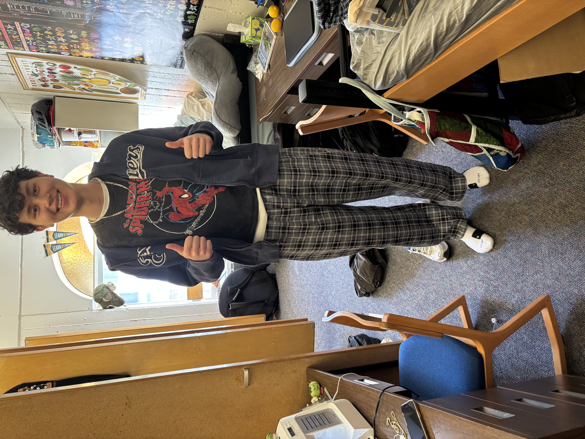
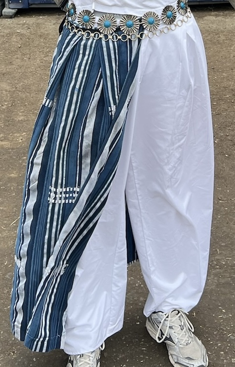
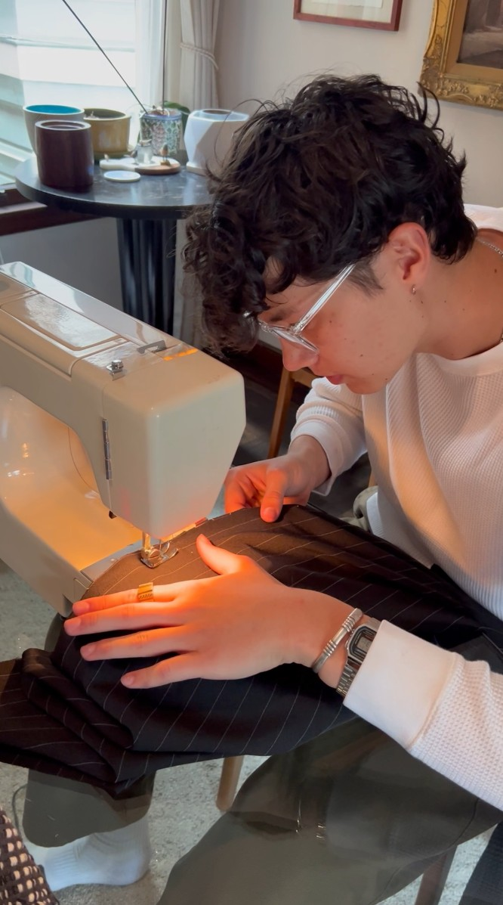
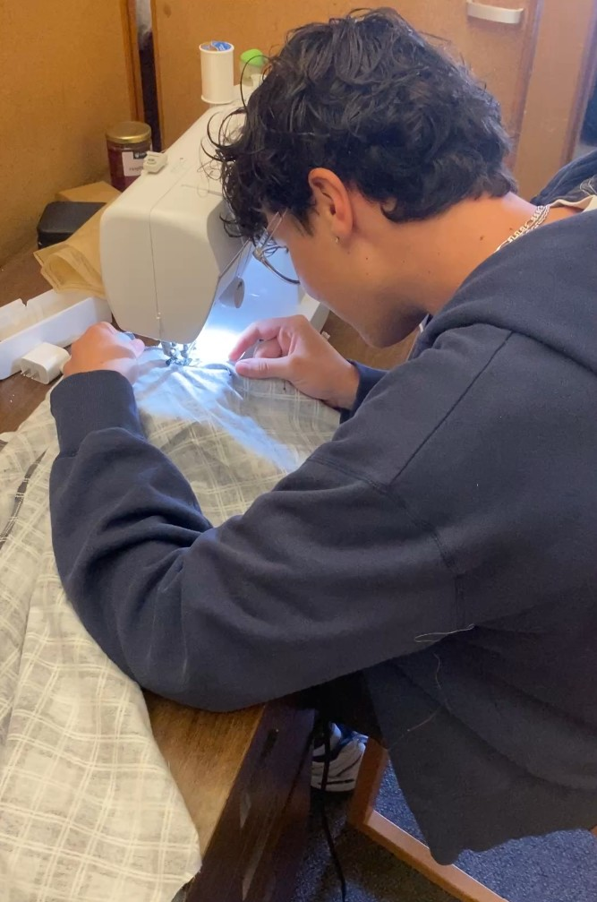

During my freshman year of college, one of my friends brought a sewing machine to school and taught me how to use it. I have always found it difficult to find certain styles of pants in my size, so I wanted to learn how to make my own.
My first project was a pair of pajama pants. They took an entire day to complete because it was my first time using a sewing machine, and the process was much more involved than I expected.
Since then, I have become more comfortable using the sewing machine and have experimented with more challenging patterns. My favorite project is an outfit I made for Outside Lands. I created an an apron-style garment with box pleats using fabric I found at a flea market. I also made a pair of white pants featuring box pleats and a fly.



